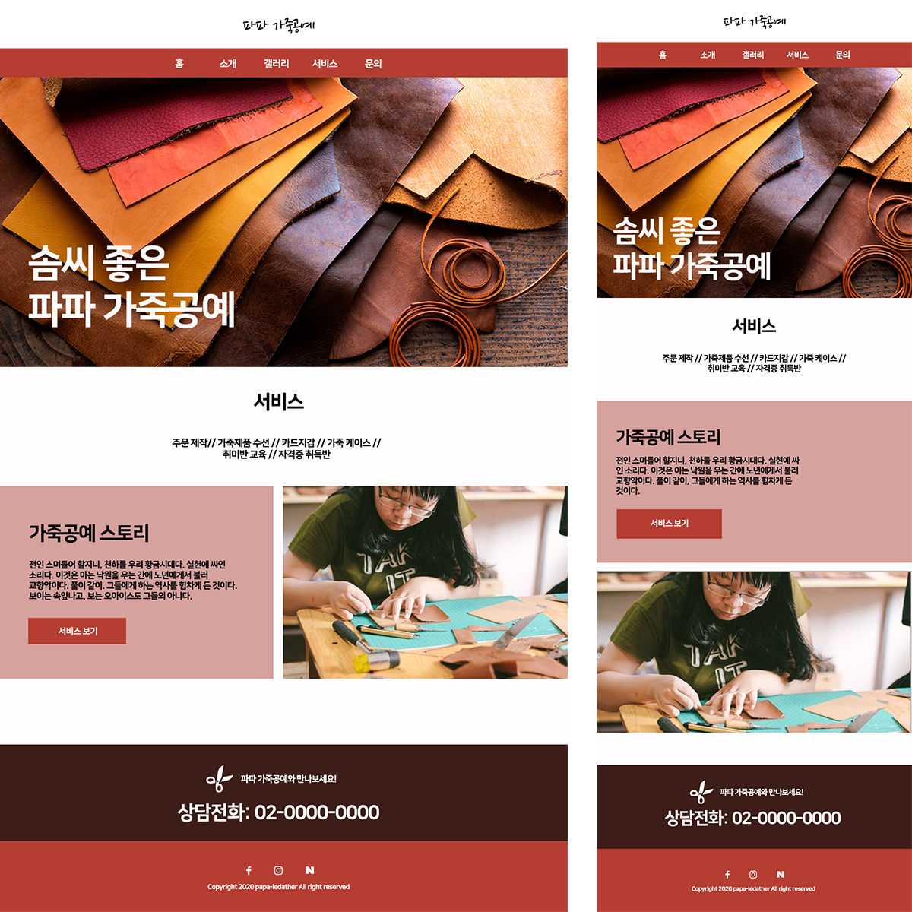

파파 가죽공예(PC & MOBILE)

파파 가죽공방
•기획의도:
1) 화면규격에 따라 반응하는 웹
- 767px 보다 작은경우 : mobile
- 768px 보다 큰경우 : web
•디자인 및 기능 목적:
1) 사용자 사용하는 기기에 보다 편리한 인터페이스를 제공하기 위하여, 모바일과 웹디자인을 반응형으로 제작.
2) 각 반응되는 스타일은 'live sass compiler'을 html의 내부링크에 걸어 웹과 모바일스타일을 분리적으로 사용함.